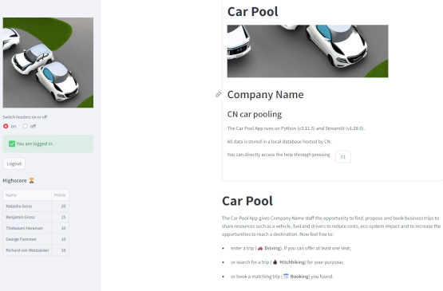

The Car Pool App gives the staff the opportunity to find, propose and book business trips to share resources such as a vehicle, fuel and drivers to reduce costs, eco-system impact and to increase the opportunities to reach a destination.
In this help you can choose out of the following sections:
